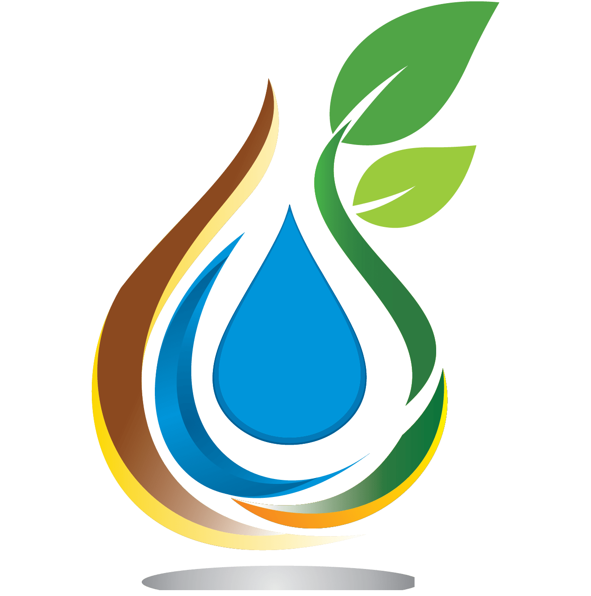

BIO.3A
O nosso Blog
Como os Peixes Transformaram a Qualidade da Água
A procura por métodos inovadores de tratamento de água é essencial para a preservação do nosso ambiente. Recentemente, surgiu uma variante...

Biofiltragem: A Poderosa Aliança na Purificação da Água
No nosso projeto para o tratamento de águas residuais, as plantas e os peixes desempenham papéis complementares na busca por águas mais limpas e...

O Uso de Plantas na Filtração de Águas Residuais: Um Passo Sustentável
Neste projeto de biofiltragem de águas residuais, estamos a explorar uma abordagem ambientalmente sustentável...